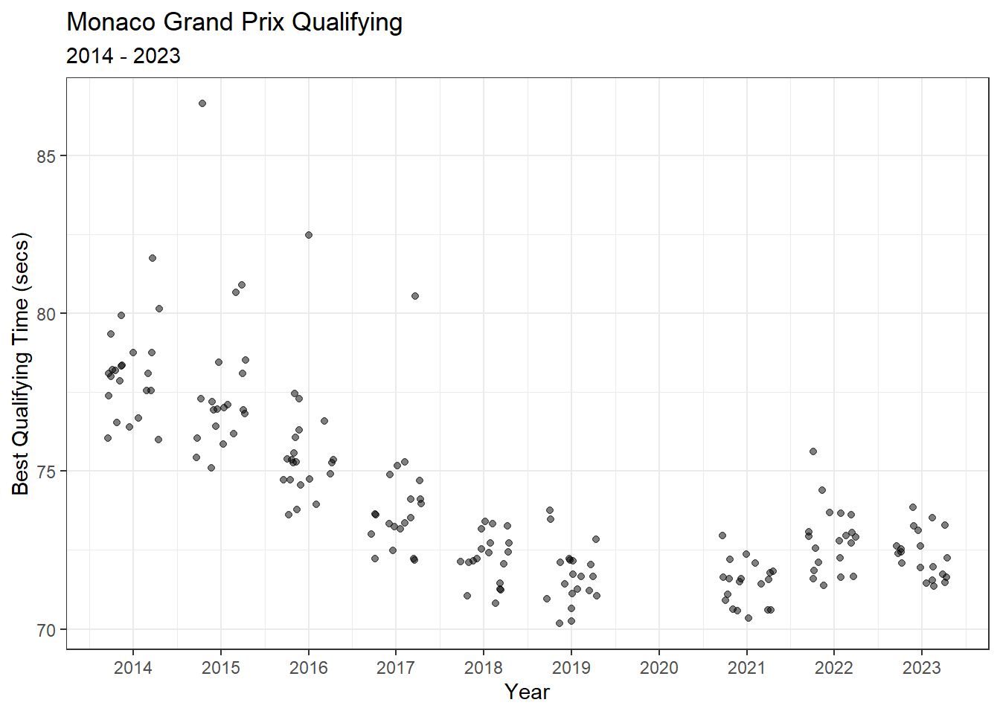

Chapter 4 Modeling Practice and Qualifying Times
As mentioned in previous chapters, some runs during practice sessions are used to simulate qualifying or race pace. For instance, FP1 is typically used to test the car and ensure it is working as expected, while FP2 and FP3 are often used to test the car’s performance on long runs and the car’s speed over laps, respectively. Knowing this, I would expect practice times to correlate to qualifying times. This chapter will take a deep-dive into that relationship and try to better understand it.
Below, we can plot the best time set during FP1 versus the best time during Q1. For the most part, there is a near 1:1 ratio. However, there are several outlying clusters of times that don’t follow a 1:1 ratio.
practice_and_qualifying %>%
ggplot(aes(Time_secs_1, Q1_secs)) +
geom_point(alpha = 0.2) +
theme_bw() +
labs(x = 'Best Time during FP1 (secs)',
y = 'Best Time during Q1 (secs)')
One of these outlying clusters is data collected from the Malaysian Grand Prix in 2017. Free Practice 1 of the Malaysian Grand Prix in 2017 was delayed for half an hour due to heavy rain at the Sepang International Circuit. Max Verstappen eventually finished the wet FP1 session with a fastest time of 1:48.962. Qualifying was not impacted by rain, and Lewis Hamilton took pole with a time of 1:30.076. In the figure below, we can clearly see this relationship displayed by the flatter slope for the Malaysian Grand Prix in 2017.
practice_and_qualifying %>%
mutate(malaysia_2017 = ifelse(Race == 'malaysia' & Year == 2017, 'Malaysia 2017', 'No')) %>%
ggplot(aes(Time_secs_1, Q1_secs)) +
geom_point(aes(col = malaysia_2017), alpha = 0.5, show.legend = T) +
theme_bw() +
labs(x = 'Best Time during FP1 (secs)',
y = 'Best Time during Q1 (secs)') +
gghighlight(malaysia_2017 == 'Malaysia 2017', use_direct_label = FALSE) +
scale_color_manual('', values = c('Malaysia 2017' = 'black'))
How to create a custom color scale in ggplot
At times, creating custom color scales can be very convenient. The simplest way to create a custom color scale is by using scale_color_manual(). In the figure above, I used the following function to color data for Malaysia 2017 black:
scale_color_manual('', values = c('Malaysia 2017' = 'black'))
For more information on using scale_color_manual() in ggplot2, visit this link: https://ggplot2.tidyverse.org/reference/scale_manual.html
I want to estimate the relationship between FP1 times and Q1 times, but these outlying clusters are compromising the relationship. In the Malaysia example above, rain was the root cause for a distinctly different slope (FP1 vs Q1). I want to remove these abnormal sessions, but it would be quite tedious to research all FP1 or Q1 sessions that were impacted by rain. As an alternative, I will utilize exploratory data analysis (EDA) and data wrangling to filter out abnormal times.
For the vast majority of Grands Prix, the slope of this relationship (FP1 times vs Q1 times) is slightly larger than 1. I’ll use a histogram below to plot the distribution of ratios of all FP1:Q1 times.
practice_and_qualifying %>%
mutate(ratio = Time_secs_1 / Q1_secs) %>%
ggplot(aes(ratio)) +
geom_histogram(bins = 100, alpha = 0.5) +
theme_bw() +
labs(x = 'Ratio of FP1:Q1 Times',
title = 'Distribution of all Ratios of FP1:Q1 Times',
subtitle = '2014 - 2022') +
scale_x_continuous(limits = c(0.7, 1.3),
breaks = c(0.7, 0.8, 0.9, 1, 1.1, 1.2, 1.3))There are three separate peaks in this distribution:
- slightly larger than 1.0
- just below 0.90
- at approximately 1.15
Knowing this information, I will try to filter out any ratios lower than 0.95 or larger than 1.10.
practice_and_qualifying %>%
mutate(ratio = Time_secs_1 / Q1_secs) %>%
filter(ratio >= 0.95 & ratio <= 1.10) %>%
ggplot(aes(Time_secs_1, Q1_secs)) +
geom_point(alpha = 0.2) +
theme_bw() +
labs(x = 'Best Time during FP1 (secs)',
y = 'Best Time during Q1 (secs)')
That looks much better! There’s still a few funky outliers, but I feel comfortable that this distribution represents the typical Formula 1 weekend. While this graph is some evidence to suggest that FP1 times are correlated to Q1 times, I actually want to quantify this relationship. So, next, I will use a simple linear regression model to estimate the relationship between FP1 and Q1 times.
4.1 Models
Why build a model? At the most basic level, we are looking for relationships between variables in our dataset. Models are mathematical mappings between variables… in a rather structured way. People generally build models for:
- making inferences (i.e. using a model to answer research questions)
- making predictions
- or both inference and prediction
An example of an inferential model could be a logistic regression model used to estimate the effect that smoking has on someone’s likelihood of developing cancer. An example of predictive model is an election forecaster. But, inferential models can still be used to make predictions, and sometimes the predictive models can make inferences. In this chapter, I want to use an inferential models to make general claims about the relationship between practice times and qualifying times. In the next section, I’ll introduce regression models and demonstrate how to use them to learn about Formula 1.
4.2 Simple Linear Regression Model: Practice vs Qualifying Times
Dr. Andrew Gelman summarizes regression much more succinctly than I ever could:
Regression is a method that allows researchers to summarize how predictions or average values of an outcome vary across individuals defined by a set of predictors.
If you’ve ever created a scatterplot in Excel, the best-fit line is based on a linear regression between the variable on the x-axis and the variable on the y-axis. However, linear regression can be far more useful than a simple method to find the best-fit line. Throughout the rest of this chapter, I will introduce ways to summarize and communicate results from linear regression models. In this book, I will only briefly cover particularly important aspects of models. So, if you are in need of an introduction or refresher on regression, I highly recommend checking out the following introductory book on regression:
More information about linear regression in R
My favorite introductory book on regression in R is Regression and Other Stories by Andrew Gelman, Jennifer Hill, and Aki Vehtari. This book focuses on the practical application of regression models in R, and includes tons of very helpful code. While the authors build bayesian models, I think it is helpful for anyone looking to learn about regression. Here’s a link to the free book and lots of example code:
The most simple linear regression model uses a single predictor variable. In our model, the single predictor is FP1 times. We will use linear regression model to fit a linear relationship (straight line) between the predictor variable (FP1 times) and the response variable (Q1 times). This model provides estimates of the intercept, slope, and error.
The formula for this simple linear regression model is:
\[ Q1 \ time = Intercept + Slope * FP1 \ time + error \]
I will fit the model to the filtered dataset I created earlier (i.e. with ratios between 0.95 and 1.10). Below, I’ll re-write this data to a new dataframe.
fp1_v_q1_clean <- practice_and_qualifying %>%
mutate(ratio = Time_secs_1 / Q1_secs) %>%
filter(ratio >= 0.95 & ratio <= 1.10)To fit a linear regression model to this data, I will use the lm() function.
# Fir the linear regression model
fp1_v_q1.model <- lm(Q1_secs ~ Time_secs_1, data = fp1_v_q1_clean)
How to fit a simple linear regression model in R
To fit a simple linear regression model in R, we can use the lm() function.
The lm() function takes uses the following notation:
lm(response variable ~ predictor variable(s), data source)
For more information on using lm(), visit this link: https://www.rdocumentation.org/packages/stats/versions/3.6.2/topics/lm
I will now use the summary() function to summarize the output from the linear model.
summary(fp1_v_q1.model)##
## Call:
## lm(formula = Q1_secs ~ Time_secs_1, data = fp1_v_q1_clean)
##
## Residuals:
## Min 1Q Median 3Q Max
## -7.9836 -0.5859 0.0210 0.6408 8.3919
##
## Coefficients:
## Estimate Std. Error t value Pr(>|t|)
## (Intercept) 1.610673 0.163619 9.844 <2e-16 ***
## Time_secs_1 0.958841 0.001828 524.432 <2e-16 ***
## ---
## Signif. codes: 0 '***' 0.001 '**' 0.01 '*' 0.05 '.' 0.1 ' ' 1
##
## Residual standard error: 1.295 on 3200 degrees of freedom
## Multiple R-squared: 0.9885, Adjusted R-squared: 0.9885
## F-statistic: 2.75e+05 on 1 and 3200 DF, p-value: < 2.2e-16The summary output from this model contains a lot of important information about this model fit. The following list gives a bit more information about the most noteworthy items in this summary output:
- The model formula is found under Call.
- The quantiles of the residuals are listed below the model formula.
- the coefficient values are the model estimates for intercept and slope. Each coefficient also has a standard error, t-values, and statistical significance.
- The residual standard error
- degrees of freedom
- R-squared
- F-statistic
- p-value
In this particular model, the Intercept is somewhat meaningless. The intercept describes the value of the response (Q1 times) when the predictor variable (FP1 time) is = 0. However, in this example, there is no situation where FP1 is = 0.
We can interpret the slope as:
A driver’s Q1 time is expected to be about 0.036 seconds faster than their best time during Free Practice 1, on average.
I arrived at 0.036 seconds by subtracting the slope from 1.
The R2 is another important metric from this output. The R2 value, also known as the coefficient of determination, is the proportion of the variance in Q1 times that are explained by FP1 time. In this case, the R2 = 0.989, which can be interpreted as ~ 98.9% of the variance in a driver’s Q1 time can be explained by their FP1 time.
The F-statistic is of little use to us in this case. The F-statistic is the test statistic for the F-test, which evaluates whether this particular model provides a better fit to our data than a model that uses no predictor variables. If the p-value is less than 0.05 (which it is), we conclude that this model is better than a model using no predictor variables. But, we already knew this linear relationship was legit. And, with really large datasets like this one, statistical significance can be a dubious concept.
For our purposes, we should be most concerned with the R2 and the slope of this model. The R2 explains the amount of variance that our model explains, while the slope describes how FP1 times and Q1 times related. We can apply this same approach to a different comparison: FP3 vs fastest qualifying time. Because FP3 is used for qualifying simulations, it may be more representative of a car’s true qualifying pace. Using the fastest time in qualifying is likely a better measure because front-running teams likely take less risks during Q1.
fp3_v_q_clean <- practice_and_qualifying %>%
mutate(ratio = Time_secs_3 / Q_secs) %>%
filter(ratio >= 0.95 & ratio <= 1.10)
# Fir the linear regression model
fp3_v_q.model <- lm(Q_secs ~ Time_secs_3, data = fp3_v_q_clean)
summary(fp3_v_q.model)##
## Call:
## lm(formula = Q_secs ~ Time_secs_3, data = fp3_v_q_clean)
##
## Residuals:
## Min 1Q Median 3Q Max
## -8.1310 -0.3914 0.0386 0.5222 6.5447
##
## Coefficients:
## Estimate Std. Error t value Pr(>|t|)
## (Intercept) 1.210783 0.139942 8.652 <2e-16 ***
## Time_secs_3 0.973464 0.001576 617.569 <2e-16 ***
## ---
## Signif. codes: 0 '***' 0.001 '**' 0.01 '*' 0.05 '.' 0.1 ' ' 1
##
## Residual standard error: 1.194 on 3584 degrees of freedom
## Multiple R-squared: 0.9907, Adjusted R-squared: 0.9907
## F-statistic: 3.814e+05 on 1 and 3584 DF, p-value: < 2.2e-16practice_and_qualifying %>%
mutate(ratio = Q_secs / Time_secs_3) %>%
filter(ratio >= 0.95 & ratio <= 1.10) %>%
ggplot(aes(Time_secs_3, Q_secs)) +
geom_point(alpha = 0.2) +
theme_bw() +
labs(x = 'Best Time during FP3 (secs)',
y = 'Best Time during Qualifying (secs)')In this FP3 model, we can interpret the slope as:
A driver’s best time in qualifying is expected to be about 0.012 seconds faster than their best time during Free Practice 3, on average.
Again, I arrived at 0.012 seconds by subtracting the slope from 1.
This FP3 model explains fractionally more variance than the previous FP1 model (the R2 = 0.992 vs 0.989). So, FP3 times explain about 99.2% of the variance in a driver’s best qualifying time.
Pretty interesting!
Next, we’ll use a linear regression model to estimate the progression of qualifying times over time (i.e. by year).
4.3 Simple Linear Regression Model: Qualifying time vs Year
In the last chapter, I created this figure to show the progression of qualifying times at the Australian Grand Prix.
practice_and_qualifying %>%
filter(Race == 'australia') %>%
mutate(rain = ifelse(Year == 2014 & Q_secs > 100, 'rain during Q2', ' ')) %>%
filter(rain == ' ') %>%
ggplot(aes(Year, Q_secs)) +
geom_point(position = position_jitter(seed= 123, h = 0, w = 0.3), alpha = 0.5) +
stat_smooth(method = 'lm', se = F, size = 0.3, alpha = 0.5) +
theme_bw() +
labs(x = 'Year',
y = 'Best Qualifying Time (secs)',
title = 'Australian Grand Prix Qualifying',
subtitle = '2014 - 2023') +
scale_x_continuous(breaks = c(2014, 2015, 2016, 2017, 2018, 2019, 2020, 2021, 2022, 2023)) +
theme(plot.title = element_text(hjust = 0.5),
plot.subtitle = element_text(hjust = 0.5))I used the stat_smooth() function to fit a best-fit line through the data. But, this was just a visual aid and I didn’t actually quantify the relationship between year and qualifying time. To quantify this relationship, a simple linear regression model can be used. The formula for this model is simply:
\[Qualifying \ time \sim intercept \ + \ Year \ + \ \epsilon\]
In the code below, I will:
- filter the data to include only the Australian Grand Prix
- remove sessions that were impacted by rain.
I then fit a simple linear regression model using the lm() function.
# filter times to include only clean Australian data
aus_quali_times <- practice_and_qualifying %>%
filter(Race == 'australia') %>%
mutate(rain = ifelse(Year == 2014 & Q_secs > 100, 'rain during Q2', ' ')) %>%
filter(rain == ' ',
!is.na(Q_secs))
# fit linear model
aus.lm <- lm(Q_secs ~ Year, aus_quali_times)Below is a summary of the model output.
summary(aus.lm)##
## Call:
## lm(formula = Q_secs ~ Year, data = aus_quali_times)
##
## Residuals:
## Min 1Q Median 3Q Max
## -3.5408 -1.0523 -0.0226 0.7590 7.0584
##
## Coefficients:
## Estimate Std. Error t value Pr(>|t|)
## (Intercept) 2913.43233 106.09863 27.46 <2e-16 ***
## Year -1.40194 0.05257 -26.67 <2e-16 ***
## ---
## Signif. codes: 0 '***' 0.001 '**' 0.01 '*' 0.05 '.' 0.1 ' ' 1
##
## Residual standard error: 1.767 on 141 degrees of freedom
## Multiple R-squared: 0.8346, Adjusted R-squared: 0.8334
## F-statistic: 711.3 on 1 and 141 DF, p-value: < 2.2e-16Let’s try to interpret some of this output.
This model’s fitted line equation is simply:
\[ time_Q \sim 2913 - 1.40 * year + \epsilon\]
Like before, I am most interested in the coefficient estimates, residual standard error, and R2.
intercept: For this particular model, the intercept reported in this ouput isn’t immediately useful. It tells us the estimated mean qualifying time for the year zero. A year zero does not exist in the Anno Domini calendar year system (the year 1 BC is followed directly by year AD 1), so not helpful! However, we can rescale it to the year 2014 and interpret the value like this:
The average qualifying time at the Australian Grand Prix during the initial year of the hybrid era (2014) was 93.4 seconds (2913 + (-1.40 x 2014).
Slope:
Since the beginning of the hybrid era (2014), qualifying times in Australia decrease by 1.40 seconds per year, on average.
The R2 value (coefficient of determination) is the proportion of the variance in Australian qualifying times that can be explained by yearly progression. In this case, the R2 = 0.83, which can be interpreted as:
83% of the variance in qualifying times can be explained by the year.
An approximate interpretation of the residual standard error/deviation (RSE) is:
A year’s qualifying times will deviate from the linear regression model fit line by 1.77 seconds, on average.
In the following section, I will discuss uncertainty in our model.
4.3.1 Uncertainty in model estimates
In the last section, I described the slope point estimate as: Since the beginning of the hybrid era (2014), qualifying times in Australia decrease by 1.40 seconds per year, on average. But, how sure am I of this number? A confidence interval allows us to also describe the uncertainty in that estimate. Below, I’ll calculate the 95% confidence interval around the slope estimate, and interpret it.
confint(aus.lm)## 2.5 % 97.5 %
## (Intercept) 2703.682609 3123.182046
## Year -1.505856 -1.29801595% Confidence Interval around the Slope:
Since the beginning of the hybrid era (2014), qualifying times in Australia decrease by 1.40 seconds per year, on average. We have 95% confidence that the true average decrease in Australian qualifying times per year is between 1.30 and 1.51 seconds, on average.
Let’s revisit the earlier plot of Australian Grand Prix qualifying times, with a best-fit line included. This line describes the linear regression model’s estimate of average qualifying time for each year of the race. Like we did with our slope estimate, we should describe our uncertainty around this line using a confidence and prediction interval.
The confidence interval is uncertainty surrounding a mean response, and the prediction interval is uncertainty surrounding a prediction of a single future observation.
The interpretation of the 95% confidence interval of a predicted value is: “95% of intervals of this form will contain the expected value of average qualifying time given a particular year.”
The interpretation of the 95% prediction interval of a predicted value is: “95% of intervals of this form will contain the true qualifying time for this particular year.”
Below, I will plot the 95% confidence interval around the fit.
library(broom)
# calculate the 95% confidence interval for the fit line
aus_aug <- augment(aus.lm, data = aus_quali_times, interval = "confidence", se_fit = T)
aus_aug %>%
ggplot(aes(Year, Q_secs)) +
geom_point(position = position_jitter(seed= 123, h = 0, w = 0.3), alpha = 0.5) +
stat_smooth(method = 'lm', se = F, size = 0.3, alpha = 0.5) +
theme_bw() +
labs(x = 'Year',
y = 'Best Qualifying Time (secs)',
title = 'Australian Grand Prix Qualifying',
subtitle = 'Linear Model, 95% CI (2014 - 2023)') +
scale_x_continuous(breaks = c(2014, 2015, 2016, 2017, 2018, 2019, 2022, 2023)) +
geom_ribbon(aes(ymin = .lower, ymax = .upper), fill = 'grey', alpha = 0.5) +
theme(plot.title = element_text(hjust = 0.5),
plot.subtitle = element_text(hjust = 0.5))
The augment() function from the broom package
Augment accepts a model object and a dataset and adds information about each observation in the dataset. One of many conveniences provided by augment, is the ability to attach 95% confidence or prediction intervals to a dataframe.
In the example above, I use the following code to attach a predicted value and the 95% confidence interval to the Australia qualifying dataset:
augment(aus.lm, data = aus_quali_times, interval = "confidence", se_fit = T)
For more information on using augment(), visit this link: https://broom.tidymodels.org/reference/augment.lm.html
And here, I will also include the 95% prediction interval.
# calculate the 95% prediction interval for the fit line
aus_aug_pr <- augment(aus.lm, data = aus_quali_times, interval = "prediction", se_fit = T) %>%
rename("lower_PI" = ".lower", "upper_PI" = ".upper")
# combine the intervals
aus_aug <- aus_aug %>%
bind_cols(aus_aug_pr %>% dplyr::select(lower_PI, upper_PI))
aus_aug %>%
ggplot(aes(Year, Q_secs)) +
geom_point(position = position_jitter(seed= 123, h = 0, w = 0.3), alpha = 0.5) +
stat_smooth(method = 'lm', se = F, size = 0.3, alpha = 0.5) +
theme_bw() +
labs(x = 'Year',
y = 'Best Qualifying Time (secs)',
title = 'Australian Grand Prix Qualifying',
subtitle = 'Linear Model, 95% CI, and 95% PI (2014 - 2023)') +
scale_x_continuous(breaks = c(2014, 2015, 2016, 2017, 2018, 2019, 2022, 2023)) +
geom_ribbon(aes(ymin = lower_PI, ymax = upper_PI), fill = 'grey', alpha = 0.25) +
geom_ribbon(aes(ymin = .lower, ymax = .upper), fill = 'grey', alpha = 0.5) +
theme(plot.title = element_text(hjust = 0.5),
plot.subtitle = element_text(hjust = 0.5))
Creating a prediction interval using the augment() function
It’s just as easy to create a 95% prediction interval using augment.
In the example above, I use the following code to attach the 95% prediction interval to the Australia qualifying dataset:
augment(aus.lm, data = aus_quali_times, interval = "prediction", se_fit = T) %>% rename("lower_PI" = ".lower", "upper_PI" = ".upper")
To avoid confusion, I renamed the lower and upper bounds of this prediction interval lower_PI and upper_PI respectively.
For more information on using augment(), visit this link: https://broom.tidymodels.org/reference/augment.lm.html
As another reminder:
The confidence interval is uncertainty surrounding a mean response, and the prediction interval is uncertainty surrounding a prediction of a future observation.
Or, in our racing example above:
A confidence interval around the fit describes the uncertainty in predicting an average time for a given year, while the prediction interval describes the uncertainty in predicting any single time for a particular year.
In the next section, I will build on these ideas and add complexity to this simple linear regression model.
4.4 Interaction Model
I would like to now expand my question a bit.
How does qualifying time progression compare between the Australian Grand Prix and another race?
To begin answering this question, I can take a similar modeling approach that I used for Australia, but apply it to another race. Let’s take a look at the Monaco Grand Prix. I’ll run through the same modeling steps below.
practice_and_qualifying %>%
filter(Race == 'monaco') %>%
ggplot(aes(Year, Q_secs)) +
geom_point(position = position_jitter(h = 0, w = 0.3), alpha = 0.5) +
theme_bw() +
labs(x = 'Year',
y = 'Best Qualifying Time (secs)',
title = 'Monaco Grand Prix Qualifying',
subtitle = '2014 - 2023') +
scale_x_continuous(breaks = c(2014, 2015, 2016, 2017, 2018, 2019, 2020, 2021, 2022, 2023))
Interesting! We did not have data for Australia in 2020 and 2021 (due to the pandemic). In 2022, the new ground-effects regulations were introduced. Because we were missing data for Australia in 2020 and 2021, our model assumed a constant decrease in qualifying times.
Compare this result to Monaco, where we did have data for 2021. Progression does appear to steadily decrease through 2021, but times then increase in 2022 as the new regulations are introduced.
practice_and_qualifying %>%
filter(Race %in% c('australia', 'monaco')) %>%
ggplot(aes(Year, Q_secs, col = Race)) +
geom_point(position = position_jitter(h = 0, w = 0.3), alpha = 0.5) +
theme_bw() +
labs(x = 'Year',
y = 'Best Qualifying Time (secs)',
title = title_color_coder("", "Australia", '#F8766D', " vs ", "Monaco", '#00BFC4' ," Qualifying Time Progression"),
subtitle = '2014 - 2023',
col = '') + # use the title_color_coder() function
facet_wrap(~ Race, scales= 'free_y') +
scale_x_continuous(breaks = c(2014, 2015, 2016, 2017, 2018, 2019, 2020, 2021, 2022, 2023)) +
theme(plot.title = element_text(hjust = 0.5),
plot.subtitle = element_text(hjust = 0.5),
legend.position = "none") +
theme(strip.text.x = element_text(size = 12),
axis.text.x = element_text(angle = 90, vjust = 0.5, hjust=1, size = 12),
axis.title.x = element_text(size = 15),
axis.title.y = element_text(size = 15),
plot.subtitle = element_text(hjust = 0.5, size = 15),
plot.caption = element_text(hjust = 0, size = 12),
plot.title = ggtext::element_markdown(hjust = 0.5, size = 20)) ## render the provided text as markdown/html
To quantitatively compare these two progression trends, we can build linear models for each race and compare the output. We should probably remove 2014 data (because Australia times were compromised by the rain), and 2021 data (because the Australian Grand Prix wasn’t held). And, it is probably wise to limit the data to one set of regulations (pre-2022). Below, I’ll re-plot the scatterplot with best-fit linear model lines for each race under these updated conditions.
practice_and_qualifying %>%
filter(Race %in% c('australia', 'monaco'),
Year > 2014 & Year < 2020) %>%
ggplot(aes(Year, Q_secs, col = Race)) +
geom_point(position = position_jitter(h = 0, w = 0.3), alpha = 0.5) +
stat_smooth(method = 'lm', se = F, alpha = 0.5, size = 0.3) +
theme_bw() +
labs(x = 'Year',
y = 'Best Qualifying Time (secs)',
title = title_color_coder("", "Australia", '#F8766D', " vs ", "Monaco", '#00BFC4' ," Qualifying Time Progression"),
subtitle = '2015 - 2019',
col = '') + # use the title_color_coder() function
facet_wrap(~ Race, scales= 'free_y') +
scale_x_continuous(breaks = c(2014, 2015, 2016, 2017, 2018, 2019)) +
theme(plot.title = element_text(hjust = 0.5),
plot.subtitle = element_text(hjust = 0.5),
legend.position = "none") +
theme(strip.text.x = element_text(size = 12),
axis.text.x = element_text(angle = 90, vjust = 0.5, hjust=1, size = 12),
axis.title.x = element_text(size = 15),
axis.title.y = element_text(size = 15),
plot.subtitle = element_text(hjust = 0.5, size = 15),
plot.caption = element_text(hjust = 0, size = 12),
plot.title = ggtext::element_markdown(hjust = 0.5, size = 20)) ## render the provided text as markdown/htmlWith the naked eye, it looks like Australia’s slope is steeper, suggesting that times improved at a quicker rate relative to Monaco. But, we should calculate the slope estimates and the 95% confidence intervals around the slope estimate to quantitatively compare.
# filter times to include only clean Australian data
aus_quali_times <- practice_and_qualifying %>%
filter(Race == 'australia') %>%
filter(!is.na(Q_secs),
Year > 2014 & Year < 2020)
# fit linear model for Australia
aus.lm <- lm(Q_secs ~ Year, aus_quali_times)
# 95% CI slope
aus_coef_ci <- confint(aus.lm)
# filter times to include only clean Australian data
mon_quali_times <- practice_and_qualifying %>%
filter(Race == 'monaco') %>%
filter(!is.na(Q_secs),
Year > 2014 & Year < 2020)
# fit linear model for Monaco
mon.lm <- lm(Q_secs ~ Year, data = mon_quali_times)
# 95% CI slope
mon_coef_ci <- confint(mon.lm)I will plot the slopes ± 95% confidence intervals here:
aus_v_mon <- cbind(data.frame(australia = cbind(est = coef(aus.lm), aus_coef_ci)[2,]),
data.frame(monaco = cbind(est = coef(mon.lm), mon_coef_ci)[2,])) %>% t() %>%
as.data.frame() %>%
rownames_to_column(var = 'race')
aus_v_mon %>%
ggplot() +
geom_pointrange(aes(x = race, y = est, ymin = `2.5 %`, ymax = `97.5 %`, col = race),
linewidth = 3, alpha = 0.5, size = 1) +
theme_bw() +
scale_color_manual('', values = c("australia" = '#F8766D', "monaco" = '#00BFC4')) +
labs(x = 'Grand Prix', y = 'Coefficient Estimate \u00b1 95% CI',
title = title_color_coder("", "Australia", '#F8766D', " vs ", "Monaco", '#00BFC4' ," Qualifying Time Progression"),
subtitle = '2015 - 2019') +
theme(plot.title = element_text(hjust = 0.5),
plot.subtitle = element_text(hjust = 0.5),
legend.position = "none") +
theme(plot.title = ggtext::element_markdown()) ## render the provided text as markdown/htmlSo, while my initial guess that qualifying times decreased at a more rapid rate in Australia, the 95% confidence intervals for the slope estimates largely overlap. This suggests that there’s little to no statistical evidence that these slopes are in fact different.
But, a more proper way to make this comparison is by using an interaction model. It can answer the question that we had (i.e. Was qualifying time progression different between the two races?), and it can do a lot more. Below, I’ll fit an interaction model to the 2015 - 2019 data for the Australian and Monaco Grands Prix.
# filter data
aus_mon_data <- practice_and_qualifying %>%
filter(Race %in% c('australia', 'monaco'),
!is.na(Q_secs),
Year > 2014 & Year < 2020) %>%
mutate(Race = factor(Race))
# fit an interaction model
aus.mon.int.lm <- lm(Q_secs ~ Year:Race, data = aus_mon_data)
# print the model output
summary(aus.mon.int.lm)##
## Call:
## lm(formula = Q_secs ~ Year:Race, data = aus_mon_data)
##
## Residuals:
## Min 1Q Median 3Q Max
## -3.0609 -0.9699 -0.1678 0.7731 9.2456
##
## Coefficients:
## Estimate Std. Error t value Pr(>|t|)
## (Intercept) 3236.76129 166.49551 19.44 <2e-16 ***
## Year:Raceaustralia -1.56248 0.08255 -18.93 <2e-16 ***
## Year:Racemonaco -1.56793 0.08255 -18.99 <2e-16 ***
## ---
## Signif. codes: 0 '***' 0.001 '**' 0.01 '*' 0.05 '.' 0.1 ' ' 1
##
## Residual standard error: 1.638 on 197 degrees of freedom
## Multiple R-squared: 0.9292, Adjusted R-squared: 0.9285
## F-statistic: 1294 on 2 and 197 DF, p-value: < 2.2e-16At first, the output may seem a bit confusing, but it only requires a small adjustment. This model produces coefficient estimates for a race-specific intercept and slope, relative to the ‘base-level’. In this case, Australia is the base level. Luckily, we can actually use functions from the emmeans package to easily estimate the coefficient and confidence intervals by race. emmeans stands for estimated marginal means, which are means for treatment levels that are adjusted for means of other factors in the model. In this example, we are interested in the influence of year on qualifying times, which is also impacted by the circuit. I will use the handy emtrends() function to tidy up this model’s results.
emtrends(aus.mon.int.lm, pairwise ~ Race, var = 'Year') %>%
as.data.frame() %>%
filter(Race %in% c('australia', 'monaco')) %>%
ggplot() +
geom_pointrange(aes(x = Race, y = Year.trend, ymin = lower.CL, ymax = upper.CL, col = Race),
linewidth = 3, alpha = 0.5, size = 1) +
theme_bw() +
scale_color_manual('', values = c("australia" = '#F8766D', "monaco" = '#00BFC4')) +
labs(x = 'Grand Prix', y = 'Coefficient Estimate \u00b1 95% CI',
title = title_color_coder("", "Australia", '#F8766D', " vs ", "Monaco", '#00BFC4' ," Qualifying Time Progression"),
subtitle = 'Interaction Model: 2015 - 2019') +
theme(legend.position = "none") +
theme( plot.subtitle = element_text(hjust = 0.5),
plot.title = ggtext::element_markdown(hjust = 0.5)) ## render the provided text as markdown/html
the emmeans package
Estimated marginal means (EMMs), a.k.a. least-squares means, are predictions on a reference grid of predictor settings, or marginal averages.
To estimate the marginal means of a model, simply run emmeans(model, pairwise ~ treatment). However, more thought should go into the use of this function. This is particularly true for more complicated models.
The emtrends() function is useful when a fitted model involves a numerical predictor x interacting with another predictor a (typically a factor). This si the case with our interaction model where we have year (numeric) interacting with race (factor).
For more information on using the emmeans package, visit these links: https://cran.r-project.org/web/packages/emmeans/vignettes/comparisons.html
While the estimates for the slope remain the same to those estimated with individual models, the 95% confidence intervals are narrower for this interaction model. Nonetheless, it doesn’t change our opinion that the rate of qualifying time improvement is not statistically different between these two races during this time period (2015 - 2019).
As we did for a single race earlier, we can use the augment() function to estimate the 95% confidence and 95% prediction intervals for this interaction model.
# calculate the 95% confidence interval for the fit line
aus_v_mon_aug <- augment(aus.mon.int.lm, data = aus_mon_data, interval = "confidence", se_fit = T)
# calculate the 95% prediction interval for the fit line
aus_mon_aug_pr <- augment(aus.mon.int.lm, data = aus_mon_data, interval = "prediction", se_fit = T) %>%
rename("lower_PI" = ".lower", "upper_PI" = ".upper")
# combine the intervals
aus_v_mon_aug <- aus_v_mon_aug %>%
bind_cols(aus_mon_aug_pr %>% dplyr::select(lower_PI, upper_PI))
aus_v_mon_aug %>%
ggplot(aes(Year, Q_secs, col = Race), show.legend = F) +
geom_point(position = position_jitter(seed= 123, h = 0, w = 0.3), alpha = 0.5) +
stat_smooth(method = 'lm', se = F, size = 0.3, alpha = 0.5) +
theme_bw() +
labs(x = 'Year',
y = 'Best Qualifying Time (secs)',
title = title_color_coder("", "Australia", '#F8766D', " vs ", "Monaco", '#00BFC4' ," Qualifying Time Progression"),
subtitle = 'Linear Model, 95% CI, and 95% PI (2015 - 2019)') +
scale_x_continuous(breaks = c(2014, 2015, 2016, 2017, 2018, 2019, 2020, 2021, 2022, 2023)) +
geom_ribbon(aes(ymin = lower_PI, ymax = upper_PI), fill = 'grey', alpha = 0.25) +
geom_ribbon(aes(ymin = .lower, ymax = .upper), fill = 'grey', alpha = 0.5) +
theme(legend.position = "none") +
theme(strip.text.x = element_text(size = 12),
axis.text.x = element_text(angle = 90, vjust = 0.5, hjust=1, size = 12),
axis.title.x = element_text(size = 15),
axis.title.y = element_text(size = 15),
plot.subtitle = element_text(hjust = 0.5, size = 15),
plot.caption = element_text(hjust = 0, size = 12),
plot.title = ggtext::element_markdown(hjust = 0.5, size = 20)) + ## render the provided text as markdown/html
facet_wrap(~ Race)This visual helps highlight that these slopes are not statistically different from each other.
As a reminder, each Grand Prix’s line describes the linear regression model’s estimate of average qualifying time for each year of the race. The inner band represents the 95% confidence interval of the prediction (confidence in the average response), and the outer band represents the 95% prediction interval of the prediction (confidence in a single response).
And for yet another reminder….
The confidence interval is uncertainty surrounding a mean response, and the prediction interval is uncertainty surrounding a prediction of a future observation.
The confidence interval width is driven by our uncertainty in the coefficient estimates. The prediction interval width is driven by both the uncertainty in the coefficient estimates and unmodeled variance. So, even if we had a very large sample size and were very confident in our coefficient estimates, our predicted values would still vary by the residual standard error of the model (i.e. the RSE in the summary() output).
Residual Standard Error (RSE)
The Residual Standard Error (RSE) is the standard deviation of the residuals for a model. It is commonly used as a measure of how well a regression model fits a dataset.
In the interaction model above, the RSE is 1.587, meaning that the actual qualifying time with deviate from the true regression line by about 1.587 seconds, on average.
So, a lose interpretation of RSE is:
RSE, is the average amount that the response will deviate from the true regression line.